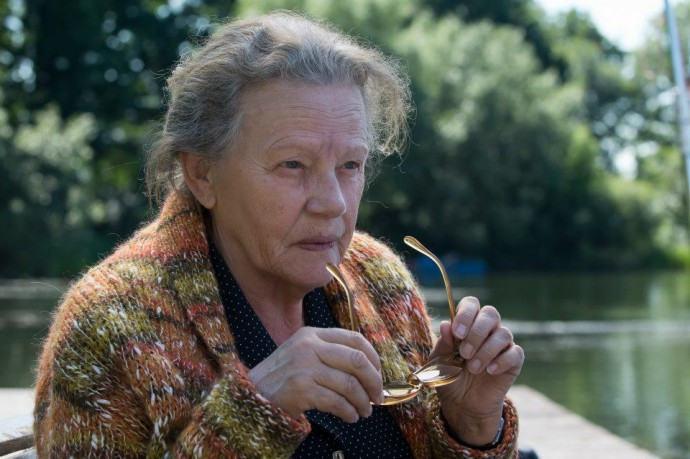

Meine Filme

Darsteller Gudrun Ritter
Alle Darsteller
Nr.
Titel
Jahr
FSK
Minuten
Auflösung
IMDB
Meta
Genre
4418
Antikörper
2005
16
119
720p
7.1 / 10
0
Krimi
3375
Er ist wieder da
2015
12
115
1080p
7.1 / 10
0
Komödie
10644
Grüner wird's nicht, sagte der Gärtner und flog davon
2018
116
1080p
7.0 / 10
0
Drama
6669
Haus der Krokodile, Das
2012
6
94
1080p
6.4 / 10
0
Abenteuer
550
Wer ist Hanna?
2011
16
111
1080p
6.8 / 10
65
Action